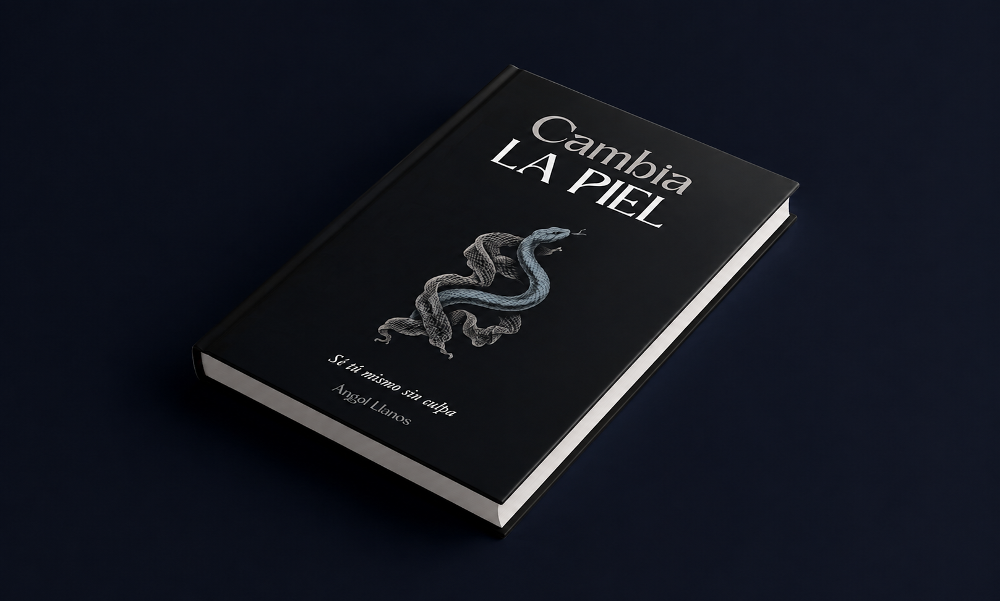

Un libro que te confrontará contra lo más profundo de ti mismo
Hay algo en tu vida que permanece desde hace tiempo: la disonancia entre quien estás siendo y quién te gustaría ser.
Aprendiste que tu forma de ser estaba mal, que tenías que reprimir lo que ahí fuera te hicieron entender que no era válido o correcto.
Ahí caíste en la trampa: perseguir el éxito, el cariño y el reconocimiento desde lo que te dijeron que tenías que ser.
Este libro te confronta de forma directa para que entiendas las partes de tu historia que quedaron sueltas. Qué mecanismos inconscientes se repiten y te mantienen atrapado en una vida insatisfactoria. Y herramientas prácticas para ver resultados desde tu propia experiencia.
No es un libro, es un activo para que por fin encuentres muchas de las respuestas que llevas tanto tiempo buscando.
No porque te las dé de forma directa, porque tú mismo las despertarás en ti.
Una historia que se repite, un vacío que no se va y un éxito que nunca es suficiente
Has probado de todo.
Y aún así, sigues en la casilla de salida.
Dan igual los libros, formaciones, podcast o contenido que hayas consumido.
Nada parece moverse y tú sigues igual, pero cada vez más saturado de información.
Mientras tanto tu vida se ve así:
- Relaciones de pareja insatisfactorias que se repiten
- Clientes que te drenan la energía y encima no tienen resultados
- Cada vez más desconectado de ti mismo
- Evadiéndote en el negocio, los hábitos, el trabajo compulsivo…
Y sí, puede que hayas entendido de dónde viene, por qué te pasa lo que te pasa, pero si el problema sigue ahí, es porque no has encontrado la pieza que le falta al puzzle.
Eso sí, no esperes un proceso de alivio, palmaditas y un camino de rosas. Si vienes buscando eso, deja de leer.
Si estás dispuesto a darle la vuelta a la situación, cambiar de una vez y a ser acompañado por alguien que te ponga incómodo y sea honesto contigo, sigue leyendo. Esto te interesa.
Esto es para ti si te encuentras en al menos una de las siguientes situaciones:
- Hagas lo que hagas sientes que nada es suficiente y te sientes poco merecedor de aquello que consigues.
- Sientes bloqueos en tu negocio que están limitando tu crecimiento.
- No consigues crear relaciones de pareja de verdadera calidad.
- Sientes que ya es hora de un cambio porque te has cansado de vivir siendo lo que entendiste que tenías que ser para que te reconocieran.
- Has entendido tus patrones, pero aún así, se siguen repitiendo.
Si todavía tienes dudas, escucha el caso de Roger
Preguntas y dudas frecuentes
¿Aplicas alguna metodología concreta?
Sí, soy creador del Método HEBI, una metodología que engloba distintas disciplinas para construir un proceso de mínimo 6 meses en el que buscamos una transformación completa a través del autoconocimiento.
¿Cuántas sesiones incluye tu 1 a 1?
En total son un mínimo de 12 hasta un máximo de 24, con una duración de una hora cada una aproximadamente.
¿Incluye algo más?
Sí, las personas que acceden al 1 a 1 tienen acceso a las llamadas grupales, el contenido exclusivo y a mi WhatsApp privado.
¿Me sentiré solo durante el proceso?
Para nada, me gusta dar un servicio cercano y que asegure al máximo buenos resultados. Por eso no doy acceso a cualquiera por mucha pasta que me pongas encima de la mesa.
¿Me harás factura?
Sí.
Ya sabes por qué has llegado hasta aquí, solo falta reservar una llamada
Agenda tu llamada para ver si somos compatibles:
Accede aquíÁngel Llanos se reserva el derecho de admisión.